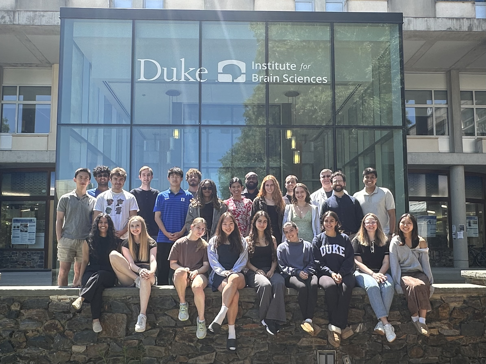

AI4TBI: Discovering AI Applications for TBI Care
AI4TBI is a
Bass Connections project (2024-2025) co-led by Pranav Manjunath, Brian Lerner, Dr. Bradley Kolls, and Dr. Samuel Berchuck that aims to discover AI applications for TBI care by conducting a mixed-methods research study with a selected team of 21 undergraduate and graduate students at Duke University.
This project received $30,000 in funding from two Bass Connections themes, (i) Brain and Society and (ii) Health Policy and Innovation, as well as the Student Research Award of $5,000 to extend the research further.
Collaborators: Dr. Timothy Dunn, Dr. Tolulope Oyesanya, Dr. Deborah Koltai, Dr. Michael Cary, Dr. Karin Eve Reuter Rice
Presentations
We are honored that our students were accepted to present this research at the National Collegiate Research Conference 2026 at Harvard, the Society-Centered AI Conference 2026, the Duke National Health Research Conference 2026, and the Duke AI Health Data Science Showcase 2025.

Background
Each year, five million Americans seek emergency medical care for traumatic brain injury (TBI), a major cause of death and disability overall and a leading cause in young adults. The harmful effects of TBI can manifest over the long term as mood/attention disorders, cognitive impairment, and suicidality. The best course of treatment is often difficult to determine due to the complexity of TBI presentations and the nonlinear relationship between patient data and phenotypes. One survey found that only 37% of healthcare providers believed they could make an accurate prognosis and 67% believed a better predictive model would change how they handle patients. Therefore, developing better TBI approaches will have a large impact on the health of Americans. Recent advances in computing and machine learning have made it possible to process and learn from large-scale healthcare datasets. For example, a clinical sepsis model has already made an impact at Duke Health. However, appropriate management and care of TBI presents complex challenges that other treatment processes do not. Therefore, to successfully employ a new model, it is critical to cultivate early engagement with stakeholders and leverage their input for a detailed assessment of the care pathway and the data it generates.
Methodology
The project team conducted a comprehensive survey of TBI management and care at Duke to inform AI solution development and pave the way for future deployment. To achieve this, team members employed qualitative methods—primarily interviews—to engage a wide spectrum of healthcare professionals involved in the TBI clinical pathway, including radiologists, radiology technicians, ICU and ER nurses, neurosurgeons, EMTs, neurologists, ER staff, and rehabilitation specialists. Guided by experts in qualitative research, the team developed interview materials and refined their approach to ensure effective data collection. In addition, students shadowed healthcare professionals to observe their roles and responsibilities firsthand, deepening the team’s understanding of real‑world clinical workflows. Students shadowed 18 clinicians and conducted 28 Zoom interviews with clinicians across the TBI care pathway. The project team also collaborated with clinicians to curate a large TBI dataset from Duke University Hospital and conducted rigorous quality‑assurance checks to ensure its suitability for AI model development.
Outputs
Qualitative publications on understanding the challenges of TBI care, opportunities to improve TBI care using AI, and clinicians' perceptions of AI in clinical settings.
Quantitative publication resulting in an open-source dataset of the curated TBI data with ML benchmarking on crucial TBI outcome variables.
Teaching a Class
To structure this project as an educational experience, we intentionally designed it as a class that deeply engaged students across multiple dimensions. Students participated in journal clubs to critically read and discuss papers on qualitative research methods, traumatic brain injury (TBI), artificial intelligence (AI), and AI applications in healthcare. To ensure a grounded understanding of real-world clinical practice, students shadowed 18 clinicians across the TBI care pathway, gaining firsthand insights into hospital workflows and patient care. The course featured guest lectures from leading experts in qualitative research, HealthAI, data science, neuroanatomy, and frontline clinicians involved in TBI care. Students shared their learnings through midterm and final presentations, and also participated in interactive activities such as TBI trivia to reinforce key concepts in an engaging way.